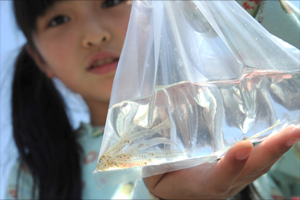
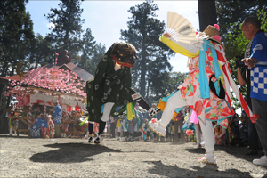
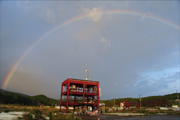
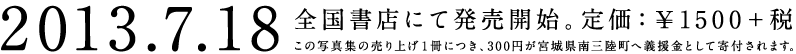
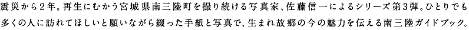
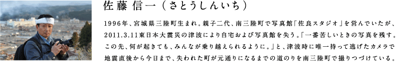
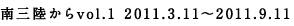
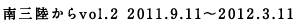

 



『南三陸から2012.3.11～2013.3.11』
著者：佐藤信一
発行：ADK南三陸町復興支援プロジェクト
発売：日本文芸社
定価：1,500円（税別）（1冊に付き300円を南三陸町に寄付）
お問い合わせ先：
mskr_prj@adk.jp
南三陸町ホームページ
ADK アサツー ディ・ケイ
COPYRIGHT@2013 ASATSU-DK INC. ALL RIGHTS RESERVED.